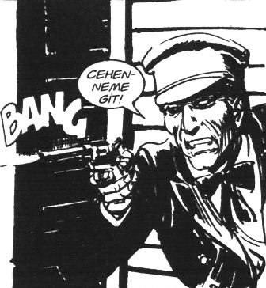

Ali Mahmut: Ati neredesin oğlum bunca zamandır?
– Abi mesai sonrası ek iş yapıyorum.
Ahmedürey: Nedir abi?
– Çatal bıçak, tencere falan pazarlıyorum. İhtiyaç varsa geliş fiyatından ayarlarım.
Musti: Dandik olmasın.
Ati: Abi Jumbo’nun ürünleri, harbiden çok kalite.
Hıdır’ın gözünde bir ışık yanar gibi oldu.
– Yaa mesai sonrası takılsam Ati’ye, biz de Palio’nun parasını denkleştiririz belki.
Ali Mahmut: Şef sen bunu içinden mi söyledin?
– Yo yo, sesli düşündüm.
Ali Mahmut: İyi o zaman senin diyafram işi düzeliyor gibi.
Ati: Abi bu çatal kaşık işini para için yapmayın, kültür için yapın.
Hepsi gülüştüler, Şino dışında.
Şino: Niye güldünüz?
Ati: Abi üniversitede bir Hacı Ahmet vardı, lakabı Çamur. Bizden bir sene önce mezun oldu, öğretmenliğe başladı. Bir gün yurtta sınava çalışıyoruz, abim içeri girdi, bize:
“Not için okumayın, kültür için okuyun ...na koyiim!” dediydi. O gün bugün sloganımız oldu. “Kültür için okuyun ...na koyiim!”
Herkes gülüştü.
Hıdır, Palio’nun resmini kesip kahvenin panosuna asmıştı. Resme odaklandı. İçindeki sınırsız gücü fotoğrafa odakladı.
Resme bakarken aklına Jack Ensign Addington’un % 100 Düşünce kitabı geldi. Bir gecede bitirmişti.
Aslında çoğu cümleyi anlamamıştı; ama şu örnek önemliydi:
“İsa bize şunu öğretti: Arzuladığın ve dua ettiğin ne olursa, inan ve senin olsun. Bu yaratıcı imgelemeyi kullanmak değil midir? ‘Ne olursa olsun’ dedi. Hiçbir sınıflandırma, koşul yoktu. İstediğiniz ne olursa olsun elde edeceğinize inandığınızda, bilincinizde kabul ettiğinizde, içsel kaynağa döndüğünüzde elde edeceksiniz. Kesinlikle.”
Burada çoğu cümleyi anlamamıştı ama “Dua edersen olur’” diyor gibiydi.
Kitap, yaratıcı imgelemeyi çok vurguluyordu; ama imgelemenin ne demek olduğunu o dâhil kimse bilmiyordu. Açıkçası Nisan’a da sormak istememişti.
Şino: Şef odaklandın arabaya! Yaratıcı imgeliyon mu bari?
– Harbiden sanki benimmiş gibi hayal ediyorum, akşam yatınca bile hep aklımda.
Ati: Plakayı da hayal et, başına Ahmedürey’in başına gelen gelmesin.
Musti: Ne oldu Ahmedürey?
– Abi benim Toyota’yı alırken o para, bu prosedür, cılkım çıktı. Artık verecek hiç param kalmamış. Adam bana “Özel plaka ister misiniz? 10 milyon daha vermeniz gerekecek” dedi. Ben de sinirlendim, şarladım “Ne plaka olursa razıyım kardeşim, para mara yok” dedim.
– Eee?
– Plaka bir geldi 35 PZ... Yuh lan pezevenk yazdırsaydınız, dedim hayvana.
Bütün kahve yerlerde, tanımadıkları üniversiteli öğrenciler de artık tüm muhabbetleri izliyor ve muhabbete katılıyorlardı.
Hıdır tekrar arabaya konsantre oldu. % 100 düşünce gücünü arabaya imgeledi (ne demekse artık). Ne diyordu, Addington?
“Yönetimi yürüten bilinçtir. Deneyimlemek istediğimiz şeylerin kalıbını hazırlayacak düşünce çeşitlerini seçiyoruz. Kendini yönetme üzerinde çalıştıkça, bilinçaltını yönetmenin yollarını öğreneceğiz. Öncelikle kendimizi adamalıyız.”
– Adamalı, dedi Hıdır.
Biri “Ne adaması?” diye sordu.
– Kendini bir davaya adamalısın ve bilinçaltını odaklamalı ve yaratıcı imgelemelisin!
Tüm ekip:?
Ali Mahmut: Kendini davaya adama abi.
– Niye?
Ali Mahmut: Bizim akrabamız Yahya Amca var. Bunun bütün arkadaşları sağcı; bu solcu. Bunu kandırıp ülkücülerin düzenlediği bir Necip Fazıl Kısakürek söyleşisine götürüyorlar; ya Konya’da ya Menemen’de, 1970’lerin sonu. Solcu sağcı birbirini bıçaklıyor. Yahya Amca zor bela kendine bir yer buluyor. Otururken bir bakıyor, iki zebella gibi ülkücü gözlerini buna dikmiş, üstüne doğru geliyor. Yüzlerinde sert bir ifadeyle başına dikiliyorlar ve soruyorlar: “Sen bu davanın adamı mısın?”
Yahya Amca içinden “Bittim ben” diyor. “Beni bu kadar adamın içinden nasıl tespit ettiler ki?” Yiyeceği dayağın haddi hesabı yok. Can havliyle:
“Tabii davanın adamıyım. Davanın adamı olmasam burada ne işim var?”
“Ağabey davanın adamıysan, Ankara’dan misafirimiz var, yerini verir misin?”
Yahya Amca hemen yerini veriyor. Sonra bize yıllarca “Hiçbir davanın adamı olmayın, ben bir kere davanın adamı oldum, onda da koltuğu kaybettim” diye nasihat etti.
Ahmedürey: Yani şimdi diyor ki Dimyat’a Palio’ya giderken evdeki Şahin’den olma.
– Bir de ayranı yok içmeye, Palio’yla gider var di mi?
Musti: Vay baba yaratıcı imgeledin bizi. Modelledin koç. Lan Dino taş mı çalıyon oğlum?
Dino: Yok abi. Şahin Abi be! Bu duvarlardaki kılıç kalkanlı adamlarla, ecinnilerle, kahvenin adının “Horhor” oluşunun alakası var mı?
Şahin: Fesuphanallah. Oku biraz da zihnin, görüşün açılsın Dino kardeş.
Hıdır: Şahin, Şenay Akbay’dan bana bir kargo gelecekti.
Şahin: Bülü, oğlum, var mı Hıdır Abine kargo?
– Yok abi.
Dino: Şahin Abi ya şu adamların yüzü korkunç gibi.
Şahin: Sana ne oğlum, dön arkanı oyna oyununu; bu arada şu hikâyeyi de oku, internetten indirdim, ne yazık kaynağı yok.
Dino: “Corcor” diye kıraathane adı mı olur abi?
GÜNÜN HİKÂYESİ
İKİ GEZGİN MELEK
İki gezgin melek, geceyi geçirmek için oldukça varlıklı bir ailenin evinin kapısını çalmışlar. Aile, pek kaba bir üslupla, meleklere yatacak yer olarak koca malikânenin konuk odalarından birini vermek yerine, soğuk bodrumundaki küçük bir köşeyi göstermiş. Melekler buz gibi odanın soğuk ve sert zemininde kendilerine yatacak bir yer hazırlamaya çalışırken, yaşlı melek duvarda bir delik görmüş ve kalkıp deliği onarmaya girişmiş. Genç melek, yaşlı meleğe bu hareketinin nedenini sorunca, yaşlı melek hafifçe gülümsemiş:
– Her şey, her zaman göründüğü gibi değildir.
Sabah malikâneden ayrılan melekler, gece bastırınca bir kez daha kalacak yer bulmak umuduyla, bu defa çok fakir bir çiftçi ailesinin kapısını çalmışlar. Son derece misafirperver olan fakir karı koca, sofralarında ne var ne yoksa meleklerle paylaştıktan sonra, onlara rahatça uyumaları için kendi yataklarını vererek yanlarından ayrılmışlar. Sabah güneş doğduğunda, melekler zavallı karı kocayı gözyaşları içinde bulmuşlar. Yegâne geçim kaynakları olan tek inek de tarlalarının ortasında cansız yatmaktaymış. Genç melek bu sefer iyice öfkelenerek yaşlı meleğe isyan etmiş:
– Bunun olmasına nasıl izin verebildin! O varlıklı kaba adamın her şeyi vardı ama sen kalktın ona yine de yardım ettin. Bu iyi yürekli fakir ailenin ise o tek inekten başka hiçbir şeyleri yoktu; buna rağmen onu bile paylaşmaya gönüllü oldular. Ama sen o ineği de yitirmelerine izin verdin!
Bunun üzerine yaşlı melek, genç meleğe dönerek şu cevabı vermiş:
– Her şey, her zaman, göründüğü gibi değildir. O zengin malikânenin bodrumunda kaldığımız gece, duvardaki deliğin dibinde külçe külçe altın saklı olduğunu fark ettim. Malikânenin sahibi bu kadar açgözlü olduğu için ve kendisine verilmiş şans sayesinde edindiği zenginliğin bir parçasını bile paylaşmaya yanaşmadığı için, ben de o deliği öyle bir kapatıp mühürledim ki artık arayıp bulsa da açamaz ve devam etmiş:
– Sonra, dün gece biz çiftçi ailesinin yatağında uyurken, ölüm meleğinin o çiftçinin karısını almaya geldiğini gördüm. Ben de ölüm meleğine onun yerine ineği verdim.
Yaşlı melek, gülümseyerek bir kez daha eklemiş:
– Her şey, her zaman göründüğü gibi değildir. Bazen, işler istediğimiz gibi sonuçlanmadığında, aslında bizim başımıza gelen tam da budur işte. Eğer inanıyorsanız, yapmanız gereken şey sadece, her sonucun her zaman sizin lehinize olduğuna güvenmektir. Bunun böyle olduğunu, ancak belirli bir zaman sonra öğrenebilecek olsanız bile...
Gülün merkezine doğru gözlerini ayırmadan bakmaya başla, bu onun kalbidir. Yogi Raman bana gülün kalbinin yaşama çok benzediğini anlatmıştı; yolunda ilerlerken dikenlerle karşılaşacaksın ancak güvencin varsa ve düşlerine inanıyorsan sonunda dikenleri aşarak çiçeğin görkemli güzelliğine ulaşırsın. Güle bakmaya devam et. Renklerine, dokusuna ve şekline dikkat et. Güzel kokusunu içine çek ve yalnızca önünde duran bu mükemmel objeyi düşün. İlkin zihnine başka düşünceler girecek ve dikkatini gülün kalbinden uzaklaştıracak.[13]
